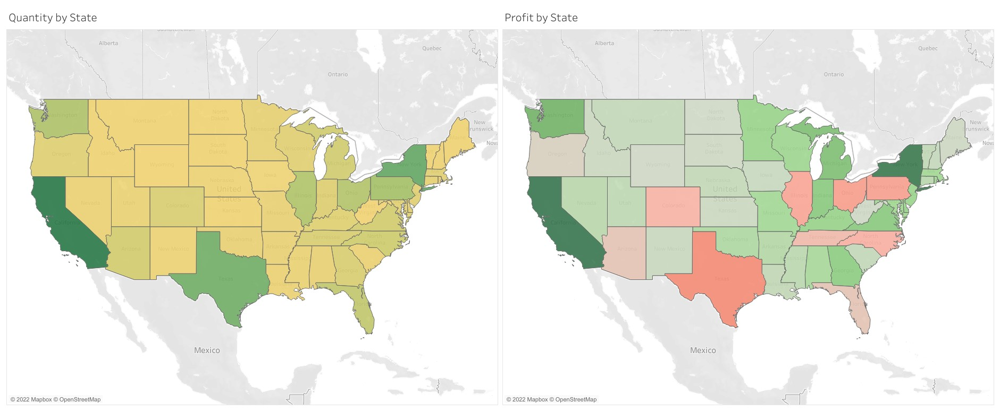
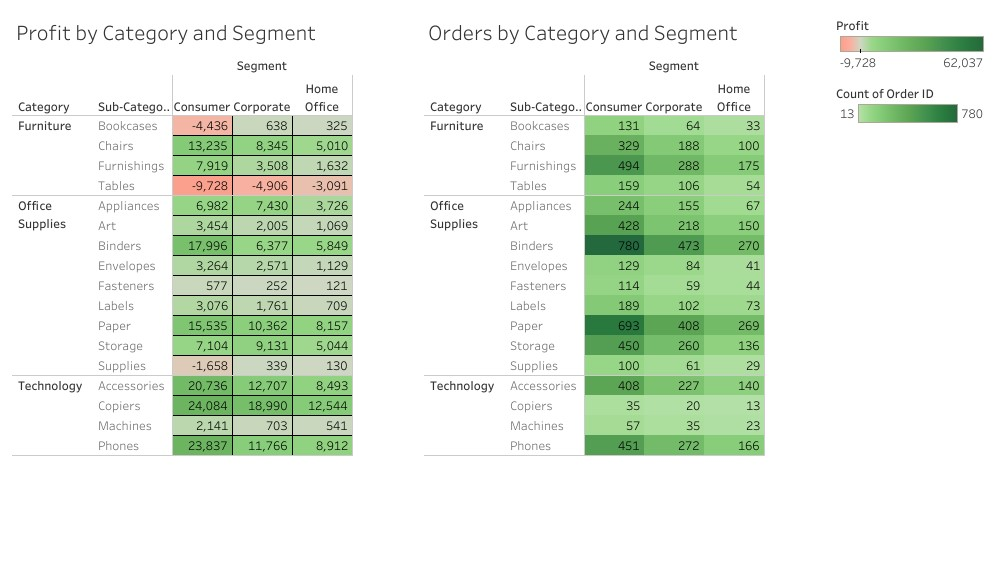
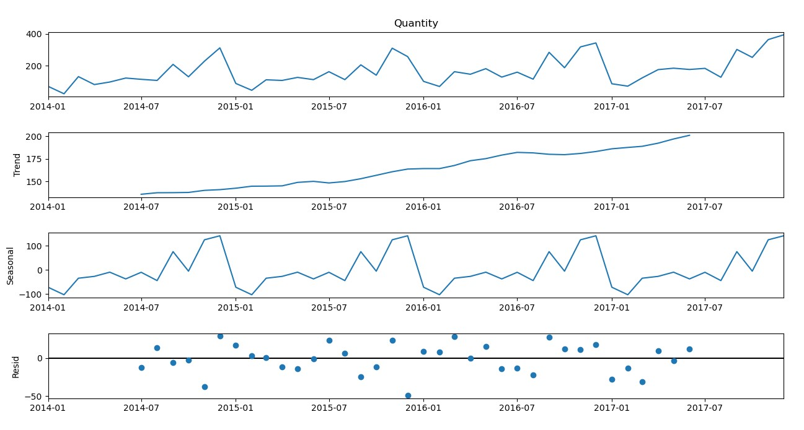

Super Store Data Analysis
This project was focused on preforming data analytics on a fictitious super store’s historical sales data. The data set was sourced from Kaggle.com and contained information for the past several years. One of the focuses of the project was understanding the geographical component of sales to understand where the most products were sent to and where the most profit was generated. The other and more in-depth focuses was creating a forecast of sales for the three main categories of products, this way the business could optimize their product inventory for the upcoming year.
Exploratory Data Analysis
Tableau Visualization Link
I created several useful dashboards and worksheets in Tableau to help shape and visualize the data set. These helped uncover some insightful information such as the geographical dimension of the store’s presence, which customer type is the most profitable, and other useful information.
Georaphical Analysis
Geographical analysis showed that there was not a proportional relationship to quantity of units sold and profit for states. This was an interesting discovery as some states did follow the assumed relationship such as California, being the state that had the largest quantity of units bought and being most profitable whilst others did not. Texas was one of the states that had a large number of orders sent and was the least profitable state returning negative profits over the course of the recorded data. This counterintuitive relationship holds for several other states as well, as shown in the Geographic Dashboard on Tableau.
Segment, Category, and Consumer Group Data
Above is another useful Dashboard I created with the breakdown of the profits and units sold by Customer Segment, Category, and Subcategory. The Customer Segment that was the most profitable was Consumer, as well as the segment that ordered the most units. Another aspect of the dashboard shows that Technology was the most profitable Category for the store bringing in $145,000 in profit, Office Supplies accounted for $120,000, and Furniture being the smallest accounted for $18,000. With this insight, a potential recommendation could be to focus more on expanding technology and office supplies holdings for the store as well as scaling down on furniture items. More useful information is provided as well, such as profit levels by Subcategory. This helps to key into the specific aspects of the business that is driving profits.
Conclusion
Using Tableau to perform exploratory data analysis, I found that there is not always a positive correlation between order count and profit in states. In addition, taking a closer look into the Customer Segment, Category, and Subcategories gave valuable insight to the key aspects of the business. These key aspects include the most profitable Customer Segment being Consumers, the most profitable Category being Technology, and the most profitable Subcategory being Copiers. Additional insight is viewable on the dashboard as well.
Forecasting

The next portion of the project was to conduct a forecast of units sold for each of the three main categories: Technology, Furniture, and Office Supplies. I chose to apply a SARIMA, or Seasonal Autoregressive Integrated Moving Average model to forecast the units sold because of the strong seasonal component of the data that would not be captured with the standard ARIMA model.
I used Python to manipulate the data set in order to make the calculations and forecasting more efficient. I started by creating three different Pandas data frames to store each of the different categories, filtering out unneeded columns and checking for any nan values. I used the statsmodels.api library for the data as it has built in functions that aid in creating a SARIMA timeseries model. To ensure that the data was actually seasonal I defined a function that could check the seasonality of each of the three timeseries. The output of the function is shown below in figure 1 for the Furniture category. The output clearly indicates that the data is in fact seasonal. It is also shown that orders sold peak in the fourth quarter of the year and drop off sharply in the first. The same function was applied to the other two categories and similar outputs were created that verified their seasonality.
Figure 1. Seasonality Decomposition
After confirming that the data was seasonal, the next step was to determine if the three timeseries were stationary. I defined a function that could test the stationarity of the data sets using statsmodels.tsa.stattools library’s adfuller function with the number of lagged periods used as the number that minimized the AIC, or Akaike Information Criterion. The ADF test, or Augmented Dickey-Fuller test, investigates stationarity by conducting unit root tests on the data. The output of the test for all three categories showed stationarity at the 90%, 95%, and 99% confidence intervals.
Augmented Dickey-Fuller Test Code
def ADF_test(timeseries, dataDesc):
print(' > Is the {} stationary ?'.format(dataDesc))
dftest = adfuller(timeseries.dropna(), autolag='AIC')
print('Test statistic = {:.3f}'.format(dftest[0]))
print('P-value = {:.3f}'.format(dftest[1]))
print('Critical values :')
for k, v in dftest[4].items():
print('\t{}: {} - the data is {} stationary with {}% confidence'.
format(k,v,'not' if v < dftest[0] else '', 100-int(k[:-1])))
ADF test results for Furniture
The next step is to optimize the SARIMA parameters. I utilized a grid search to find the optimal configuration for the model. The grid search operates by finding the combination of parameters that minimize the AIC. The output of the function was given as (p,d,q)x(P,D,Q,m), where (p,d,q) are the three trend elements and (P,D,Q,m) are the seasonal elements. This was performed for each category.
Grid Search Code
def sarima_grid_search(y, seasonal_period):
p = d = q =range(0,2)
pdq = list(itertools.product(p,d,q))
seasonal_pdq = [(x[0],x[1],x[2],
seasonal_period) for x in list(itertools.product(p,d,q))]
mini = float('+inf')
for param in pdq:
for param_seasonal in seasonal_pdq:
try:
mod = sm.tsa.statespace.SARIMAX(y,
order=param,
seasonal_order=param_seasonal,
enforce_stationarity=False,
enforce_invertibility=False)
results = mod.fit()
if results.aic < mini:
mini = results.aic
param_mini = param
param_seasonal_mini = param_seasonal
except:
continue
print('the set of params with min AIC is SARIMA{}x{} -
AIC:{}'.format(param_mini, param_seasonal_mini, mini))
Output of gride search for the furniture category 
Once the optimized parameters had been found, the next step was to input those parameters to the defined function sarima_eva which takes the dataset, optimized parameters, period, end of training data set date, and the comparison data. I used the last year from December 2016 to December 2017, as the comparison data set
SARIMA EVA Function Code
def sarima_eva(y, order, seasonal_order, seasonal_period, pred_date, y_to_test):
mod = sm.tsa.statespace.SARIMAX(
y,
order=order,
seasonal_order=seasonal_order,
enforce_invertibility=False,
)
results = mod.fit()
print(results.summary().tables[1])
pred = results.get_prediction(start=pd.to_datetime(pred_date),dynamic = False)
pred_ci = pred.conf_int()
y_forecasted = pred.predicted_mean
mse = ((y_forecasted - y_to_test)**2).mean()
print('The Root Mean Squared Error of Sarima w/ seasonal_length={}
and dynamic = False {}'.format(seasonal_period,round(np.sqrt(mse),2)))
pred_dynamic = results.get_prediction(start = pd.to_datetime(pred_date), dynamic = True,
full_results = True)
pred_dynamic_ci = pred_dynamic.conf_int()
y_forecasted_dynamic = pred_dynamic.predicted_mean
mse_dynamic = ((y_forecasted_dynamic - y_to_test)**2).mean()
print('The Root Mean Square Error of Sarima w/season_length = {}
and dynamic = TRUE {}'.format(seasonal_period,round(np.sqrt(mse_dynamic),2)))
return(results)
Output of SARIMA EVA Function

The sarima_eva function works through variables given and outputs the forecasted values for the 2017 year and compares them to the real historical values. The print statement gives useful information as to how the model performed and compares the Root Mean Squared Error, sometimes called Root Mean Square Deviation, of the two model types generated.
The second part of the sarima_eva function is the portion that displays the plots of useful information. These plots are useful to see the degree of accuracy that the model produced compared to real historical observed values. Figure 2 shows the plot diagnostics with a Q-Q plot, standardized residual graph, histogram, and correlogram. The Q-Q plot shows that the residuals follow a Normal distribution, and the correlogram shows that the lag of 1 is suitable for the moving average portion of the model. Figures 3 and 4 show how the different model types compare to the observed data. Figure 5 is the dynamic model. A dynamic model uses its predicted values to continue forecasting. For example, the value at T+1 is predicted from the historical values. The value at T+2 is predicted with the historical values plus the predicted value at T+1, this continues on until the last value in the forecasting period is predicted. Figure 6 is the one-step ahead model, which takes the historical values to predict T+1 and the real value of T+1 is used to predict T+2 and so on until the last value. Meaning that the model is only truly predicting 1 time period in the future. The output shows that the one-step ahead model performs better than the dynamic model as is expected. However, the dynamic model performs sufficiently well to be used as a cursory forecasting tool for real data.
Figure 2. Plot Diagnostics 
Figure 3. Dynamic Forecast 
Figure 4. One-Step Forecast 
The steps that were performed above, and the outputs that are shown, were of the Furniture category. For the other two categories, the same steps were performed, and similar results were seen.
After comparing the model to the observed data, and seeing that the model was sufficiently accurate, the next step was to produce the actual forecasted values. This was done by giving the model all of the historical data to fit to and then used to predict one year into the future. Figure 5 shows the code of the forecasting function and the plotting function. Figures 6 & 7 are the historical profit and forecasted profit, and historical units sold and forecasted units sold respectively.
Forecast Function and Plotting Function
def forecast(model, predict_steps, y):
pred_uc = model.get_forecast(steps = predict_steps)
pred_ci = pred_uc.conf_int()
pm = pred_uc.predicted_mean.reset_index()
pm.columns = ['Date', 'Predicted_Mean']
pci = pred_ci.reset_index()
pci.columns = ['Date', 'Lower Bound', 'Upper Bound']
final_table = pm.join(pci.set_index('Date'), on = 'Date')
final_table = pd.DataFrame(final_table)
return(final_table)
#Function that displays the forecasted data:
def forecasted_plot(model,predict_steps,y):
pred_uc = model.get_forecast(steps = predict_steps)
pred_ci = pred_uc.conf_int()
ax = y.plot(label = 'Observed', figsize= (14,7))
pred_uc.predicted_mean.plot(ax=ax, label = "Forecast")
ax.fill_between(pred_ci.index,
pred_ci.iloc[:,0],
pred_ci.iloc[:,1], color = 'k', alpha = .25)
ax.set_xlabel('Date')
ax.set_ylabel(y.name)
plt.legend()
plt.show()
Figure 5. Profit Plot
Figure 6. Quantity Plot
The values in figure 6 are derived from taking average profit per unit sold for each category and multiplying the forecasted units sold to extrapolate the forecasted profit. Whilst this method makes several assumptions, including that the proportion of products to be sold will be the same as in the past and that profit margins will remain the same, the purpose is as a general overview on how each Category profits will look in the forecasted year.
Conclusion
After creating a forecast it was found that the sales are seasonal and this information can better help the business by using the forecast to properly optimize their inventory process as well as properly allocate investments into marketing or other areas to drive sales to product categories that are not as popular. Continuing the data indicates an increase in sales for all three categories is forecasted and is a good sign that the business is growing and taking the findings of the forecast and exploratory data analysis can increase the growth rate even more.